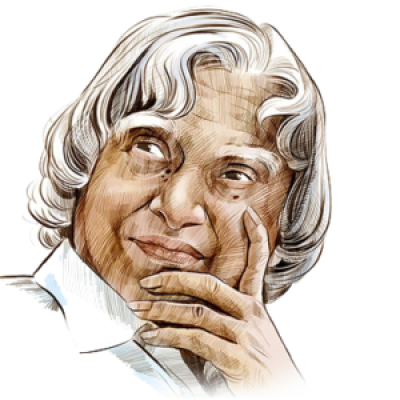

A thin outline
A medium outline
A thick outline
A 4px thick outline
Kalam served as the 11th President of India, succeeding K. R. Narayanan. He won the 2002 presidential election with an electoral vote of 922,884, surpassing the 107,366 votes won by Lakshmi Sahgal. His term lasted from 25 July 2002 to 25 July 2007.[38] On 10 June 2002, the National Democratic Alliance (NDA) which was in power at the time, expressed that they would nominate Kalam for the post of President,[39][40] and both the Samajwadi Party and the Nationalist Congress Party backed his candidacy.[41][42] After the Samajwadi Party ann